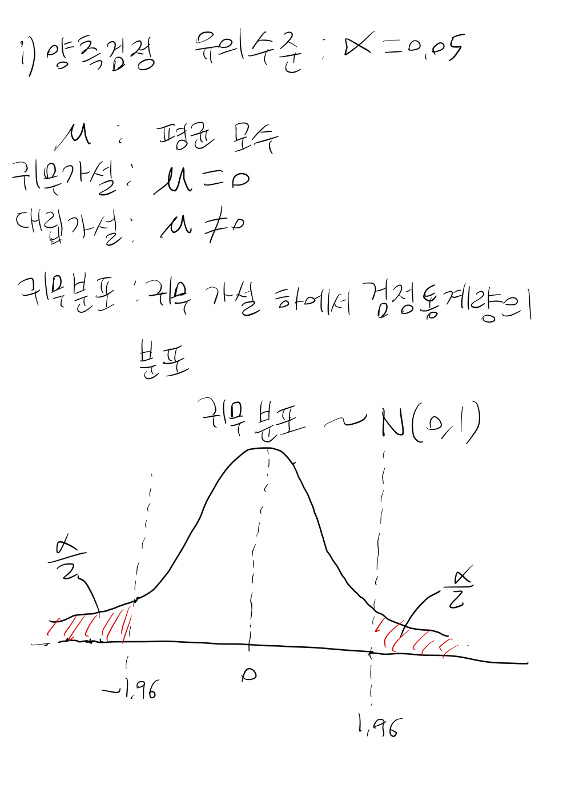
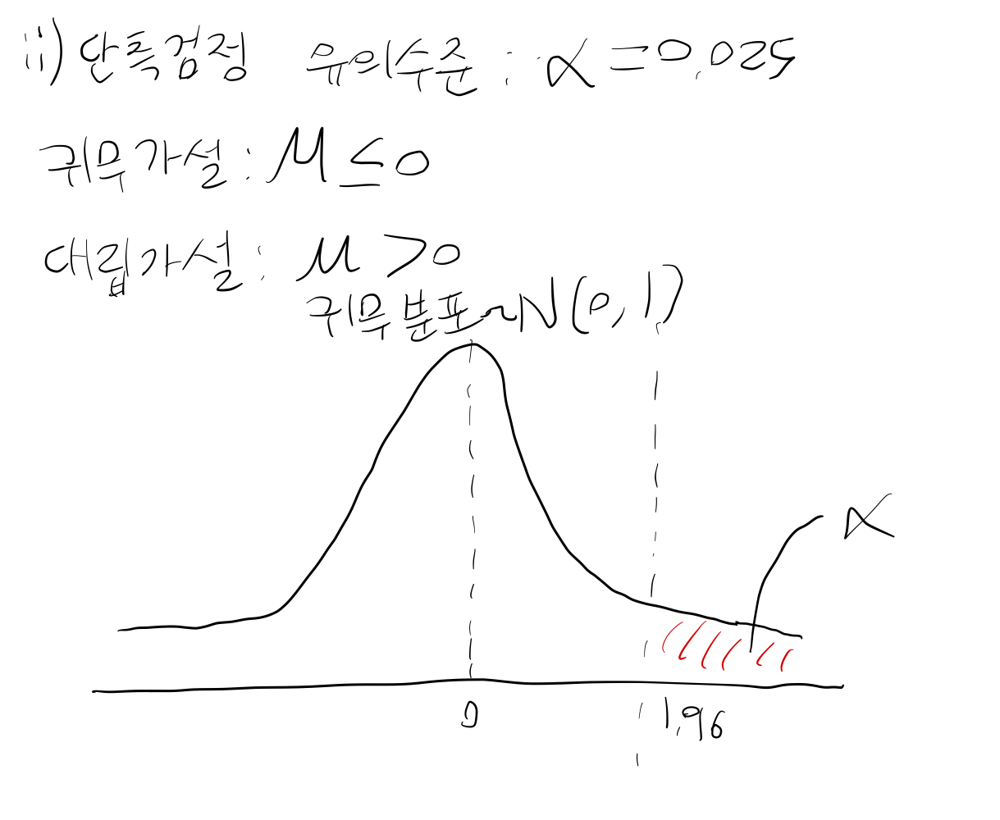
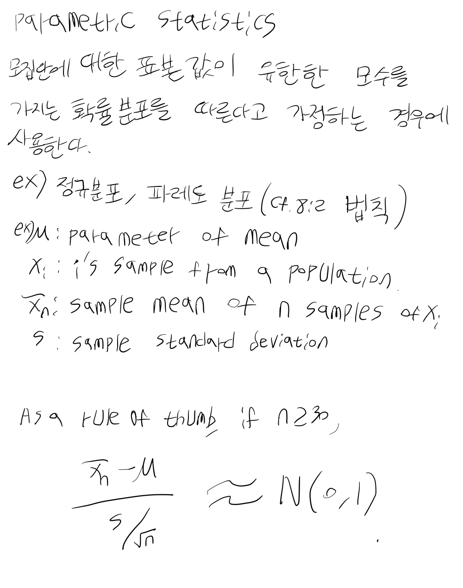
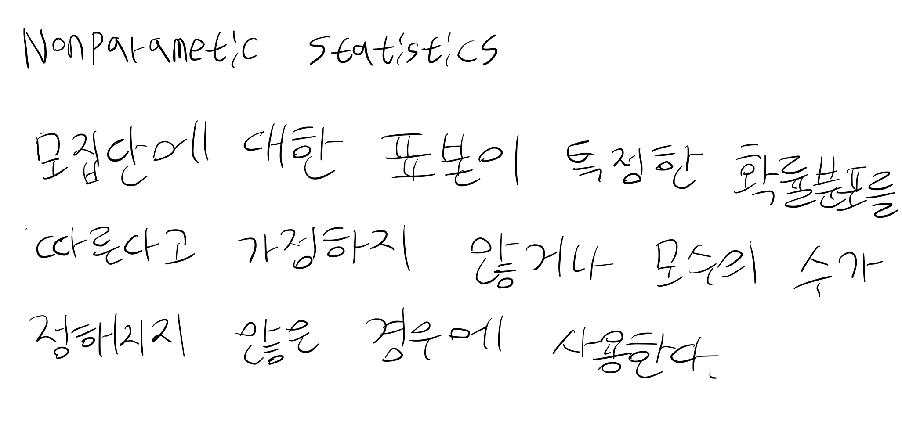

Guideline for Industry E9 Statistical Principles for Clinical Trials part 2#
5. Data Analysis Considerations#
Statistical Analysis Plan (SAP, 통계분석계획서)는 프로토콜이 완성되고나서 작성되어야 한다. 그리고 blind review가 끝나고 다시 검토되어야 한다.
Analysis Sets#
모든 피험자의 데이터를 확보하는 것을 목표로 하여야 한다. 그러나 현실적으로 피험자가 임상시험을 철회하기도 하고, 결측값이 발생하기도 한다. 따라서 이러한 경우에 어떤 편의(bias)가 발생할 것인지 기술하고 대처 방법에 대해서 논해야 한다. 분석의 초점은 편의(bias)를 줄이고 type 1 error(귀무가설이 참인데도 기각할 확률)을 통제하는 데 있다.
Full Analysis Set#
- Intention to treat principle#
임상시험에 참가한 모든 사람들을 분석하는 것이 가장 좋은 추정량을 준다고 주장하는 원리이다. 이 원리에 따라 임상시험 참가자들이 성실히 임상시험에 참여하지 않아도 함께 분석을 한다.
그럼에도 불구하고, 몇 가지 경우에는 편의를 일으키지 않기 때문에 데이터를 제거하는 것이 허용된다.
무작위 배정 전에 데이터 분석 기준을 정해두었을 때
피험자 적합 판단 기준이 객관적일 때
피험자 적합 판단 기준이 모든 피험자에게 동일하게 적용될 때
피험자 적합 판단 기준을 위반했을 때 데이터를 제거하는 경우
피험자가 한 번 이상 처치를 받고 나서 이후 데이터가 없는 경우에도 데이터를 사용하기도 한다. 특히 사망과 같은 경우에 의미가 있다. 이런 경우에는 결측치 대체 방법이 의미가 있다. 마지막 관측치를 이용해 대체하거나 수학적인 모형을 사용한다. 이 방법론은 충분히 정당화되어야 한다.
#
Per Protocol Set#
데이터를 분석하기에 유용한 셋이며 임상시험에 잘 따른 참가자들이다. 다음의 기준이 적용된다.
미리 정해진 최소한의 처치를 받은 사람
1차 평가변수의 측정이 가능한 사람
피험자 적합 판단 기준을 위반하지 않은 사람
Per protocol set은 bias가 존재할 수 있기 때문에 프로토콜에 제외 기준을 잘 명시해두어야 한다.
Sensitivity Analysis#
Full analysis set과 per protocol set을 각각 분석하여 전체적인 결과값에 큰 변화가 없다는 것을 보여주는 것이 좋다. 또한, full analysis set은 우월성 임상시험에서 낙관적인 경향을 줄이는 데 의미가 있으나 동등성 시험이나 비열등성 시험에서는 보수적이지 않은 결과값을 주기 때문에 신중하게 사용해야 한다.
결측 데이터의 수가 많을 경우에는 어떻게 결측 데이터를 다루는지에 따라 결과값이 변하는지 보여줄 필요가 있다. 이상치의 경우에도 마찬가지로 민감도 분석을 진행해야 한다.
Estimation, Confidence Intervals and Hypothesis Testing#
Estimation(추정)을 할 때에는 신뢰구간을 보고하고, 분석 방법에 대해서 기술되어야 한다. 또한, 여러 변수의 효과를 통제한 ANCOVA(공분산분석)이나 더 정밀한 분석을 하기 위한 노력이 있어야 한다.
단측검정을 사용할 경우 p값을 양측검정의 절반으로 설정하는 것이 권고된다.




Multiplicity#
다중성(multiplicity) 문제가 발생할 때 제 1종 오류는 커지게 된다. 예를 들어, 1차 평가 변수가 여러 개이거나 효과를 다중 비교하거나 시간에 따라 반복 측정하거나 중간 분석이 있다. 이 경우 가장 중요한 1차 평가 변수를 지정한다든지, contrast를 지정해준다든지, AUC를 사용하는 방법이 있다.
Stratification, Subgroup#
임상시험 전에 어떤 변수와 요인이 1차 평가 변수에 중요한 영향을 미치는지 고려해야 하며, 처치 그룹 사이에 공변량 불균형이 발생할 경우 어떻게 분석할지 고려해야 한다. 이를 위해 층화를 하는 방법이 있다. 특정한 변수의 통제의 영향이 의심스러울 경우에는 통제하지 않은 분석을 주 분석으로 하고, 통제한 분석을 뒷받침하는 근거로 제시하면 좋다.
임상시험 전에 계획된 대로 하위군 분석(노인 등)을 하면 확증적 임상시험의 분석의 일부가 될 수 있다. 그러나 대부분의 경우 하위군 분석은 탐색적 분석이다. 하위군에서도 처치 효과가 균일하게 나타나는 것을 보여야 한다. 분석할 때에 통계 모델에 interaction term을 추가하고, 그 이후에 하위군 분석을 해야 한다. 탐색적 하위군 분석에만 근거한 분석의 경우 치료 효능이나 안전성에 대한 결론은 인정되지 않는다.
6. Evaluation of Safety and Tolerability#
Safety#
임상시험의 목적 중 하나는 안전성을 입증하는 것이다. 안전성도 중요한 평가 변수로 사용된다. 또한, 데이터 수집 및 평가에 있어 다른 임상시험 데이터와 결합하기 쉽도록 일관성 있는 방법론을 사용하는 것이 권고된다.
Scope#
안전성과 내약성(tolerability)를 평가하기 위해 평가 대상은 약물 처치를 한 번이라도 받은 사람으로 한다. 약물과 상관관계에 상관없이 모든 부작용은 보고되어야 한다.
Proportion#
부작용의 발생은 위험에 전체 환자 수에서 부작용을 경험한 비율로 나타내기도 한다. 또는 약물 처치를 받은 환자 중에나 약물에 노출된 정도도 분모로 될 수 있다. 만약 긴 기간의 처치가 계획되어있고 상당수의 피험자가 임상시험을 철회하거나 죽는 경우, 위험에 대해 과소추정하는 것을 막고자 생존분석 방법론과 누적 부작용 사건 비율이 고려되어야 한다.
Noise and Signal#
소음과 신호가 상당히 많은 환경(정신건강의학 임상시험)에서는 임상시험 전의 baseline과 비교하여 악화되거나 새로 나타난 부작용을 기록한다. 또 다른 방법으로는 일정 수준 이하의 부작용은 무시하거나 여러 번 방문에서 관측된 부작용의 경우 포함한다. 이 방법은 프로토콜에서 정당화되어야 한다.
Statistical Evaluation#
신뢰구간의 추정을 통해 부작용의 정도를 기술할 수 있으며, 환자 군과 처치 군에 나타난 부작용 패턴 그래프 시각화도 좋다. p 값을 이용하여 차이를 강조할 수 있다. 이는 적절하게 요약하기 어려운 실험실 데이터에 유용하다.
가설검정에서 다중성이 있는 경우 제 1종 오류를 통제하는 것이 중요하지만, 다중성이 없는 경우에는 제 2종 오류가 더 우선적인 고려사항이다. 잠정적인 통계적 유의성을 해석할 때에는 주의해야 한다.
대부분의 임상시험 연구자들은 위약이나 동등성 약물에 대해 안전성과 내약성에 있어 큰 차이가 없다고 주장하고자 한다. 그래서 이 경우에는 비열등성 시험이나 동등성 시험이 선호된다. 잘 발생하지 않는 사건의 경우 정밀도가 떨어질 수 있다.
7. Reporting#
Evaluation and Reporting#
ICH E3의 clinical study reports에 내용이 모두 포함되어 있고, 여기서는 간략하게 다룬다. 분석 전 리뷰에서 피험자를 어떻게 제외할건지, data transformation(분석 변수에 log를 취하거나 기타 변환을 의미함), 이상치 등이 검토되어야 한다. 다른 연구에서 밝혀진 중요한 공변량은 포함되어야 한다. 모수적 혹은 비모수적 방법론이 검토되어야 한다. 중간 분석에 참여한 통계학자들은 blind review(마지막 분석)에는 참여하면 안된다.
Blind review 시점이 다가오면 피험자 선택, 데이터 선택, 변경, 요약, 추정, 가설 검정에 대한 내용이 마무리가 되어야 한다. Blind review 시에 미리 계획된 내용에 따라 진행한다.
기술통계량과 적절한 표, 그래프를 통해 1차 평가변수, 2차 평가 변수, 예후적 변수, 인구통계학적 변수에 대해 설명해야 한다. 또한, 주요 분석 결과에 대한 내용이 있어야 한다. 유의성 검정 결과를 보고할 때에는 정밀한 p값 (p=0.034)을 보고해야 한다.
또한, protocol에 나타나지 않은 추가적인 분석을 이용해 알게 된 내용은 protocol대로 진행한 내용과 구분이 되어야 한다. 일반적으로는 계획되지 않은 분석은 주의하여야 한다. 계획되지 않은 하위군에서 효과가 특별히 나타난다고 주장하는 경우가 있지만, 이는 과도한 해석의 잠재적 위험성이 있다. 하위군에서 치료효과가 없거나 부작용이 있는 경우에는 적절하게 평가되고 보고되어야 한다.
Summarizing the Clinical Database#
상품화를 위해 약의 안전성과 효과에 대한 전반적인 요약이 있어야 하며 적절한 경우 통계적 결과도 포함된다. 추후 임상시험 데이터와 병합될 가능성이 있는 경우에 변수에 대한 정의와 측정 과정이 동일해야 한다. 1차 평가변수와 2차 평가변수의 공통된 정의는 메타분석에서 유용하다.
Safety Data#
데이터베이스로부터 발생 데이터를 얻는 경우에는 대조군이 부족해서 평가하기 어렵다. 따라서 적절한 대조군(위약 또는 활성 대조약)을 고려해야 한다.
데이터 탐색에서 발생하는 모든 부작용은 보고되어야 하며, 수많은 비교로 인해 발생하는 다중성 문제를 고려해야 한다. 생존분석 방법을 활용하여 분석하고, 위험/편익 관계를 적절하게 평가해야 한다.